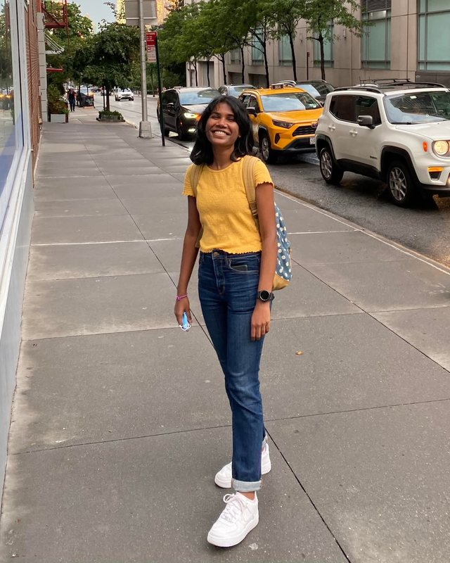

Hi, I'm Luvna.
I study how the immune system talks to the brain.
PhD candidate, Bioinformatics & Computational Biology, UNC Chapel Hill

Science
I work in Natalie Stanley's lab at UNC Chapel Hill, on computational methods for immune data (single-cell, spatial, and mass cytometry), mostly in ALS, and some in stroke, Alzheimer's, and aging.
Recent work: how immune cells coordinate in blood separates ALS patients from healthy donors, and markers of biological aging in microglia.

Beyond the lab
I write, edit and illustrate for The Pipette Pen, UNC's science communication club, and co-direct HFROG, a trainee-run discussion group on human functional and regulatory genomics.

Contact
I'm always glad to hear from people working on neuroimmunology, cell–cell communication, or anything that makes messy biological data more interpretable.